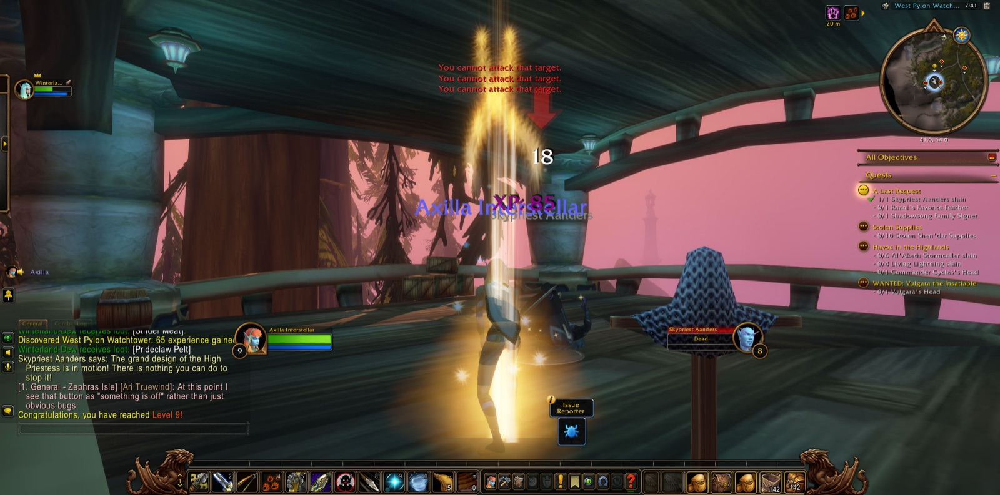
Axilla Interstellar set out again from Shen'dar Village upon Zephras Isle, and she did not go alone, for Winterland, a hunter as she was, joined her at the outset, and the two kept company along much of the road that followed. In the Shen'dar Highlands they met the Prideclaw and the Galestrider and overcame them, and Axilla went down to Windsong Lake and back again, as those do who are learning the lie of a country. For a brief while Denna the shaman walked with them, and after her Gryp the druid, courteous companions both, though neither stayed long. Among the Vuldren of the Highlands Axilla fell once, and rose, and went on.
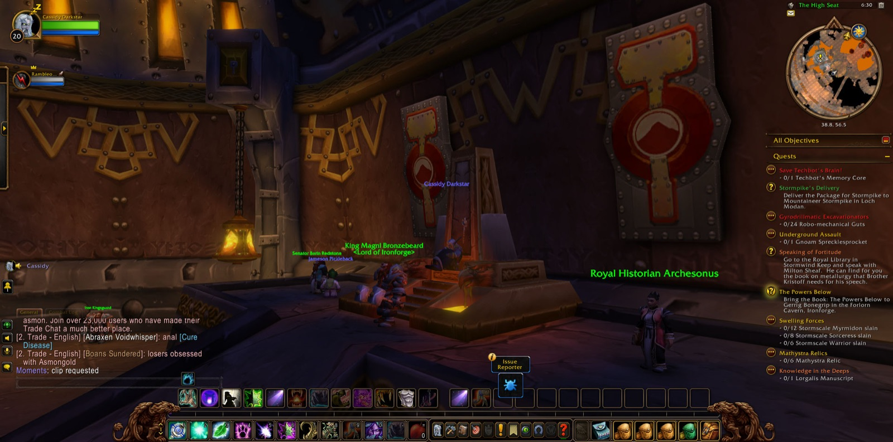
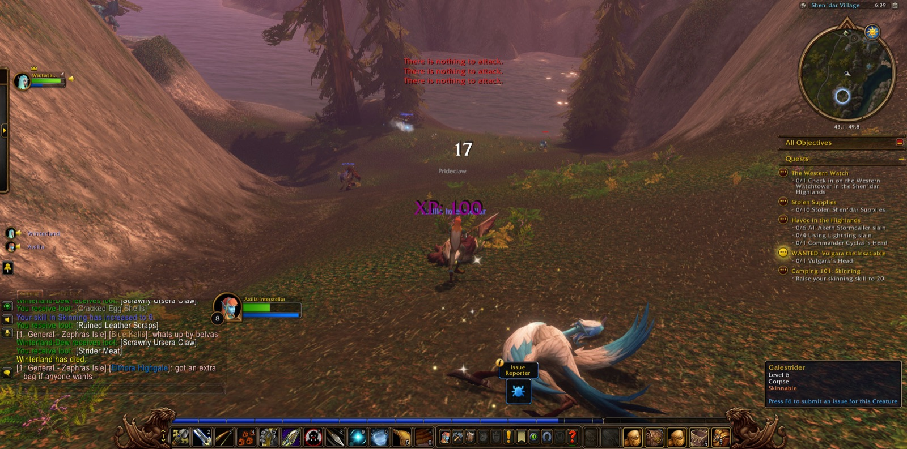
Northward then she passed into Thendal Grove and down into Thendal Cave, where the Ursera Scavengers were many and Urs'anah was among them. There she worked at the old craft of skinning until her skill stood at twenty, as the errand called Camping 101: Skinning had asked of her. She paused in the cave long enough to take a picture, passed through Thendal Village, and came back by the Highlands to Shen'dar Village to report that the thing was done.
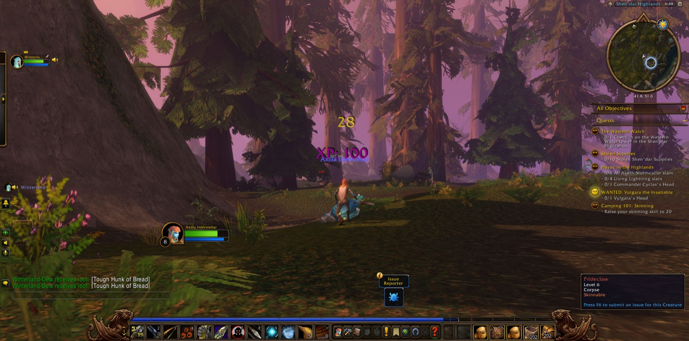
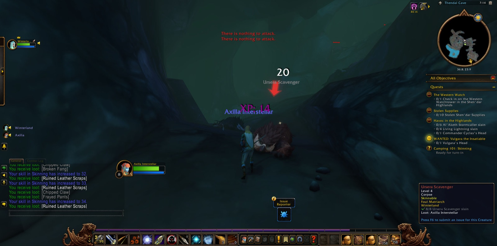
Graver errands waited. She went to see how the Western Watch fared, and there she took up A Last Request, and found and read the note that was left for her. At the West Pylon Watchtower Skypriest Aanders fell to her hand, and with that deed she came into new strength and was of the ninth level, and a picture marked the moment. From that place she bore away Raani's Favorite Feather and the Shadowsong Family Signet. Then she turned east to Falaath Village, and made war upon the Al'Aketh Stormcallers and the Living Lightning. There Winterland parted from her; but Zalia the shaman came to her side, and together they put down the Havoc in the Highlands, and Commander Cyclas was slain, and his head taken as proof. Ten bundles of Stolen Shen'dar Supplies were gathered besides, and many pictures were taken in Falaath before she was done.
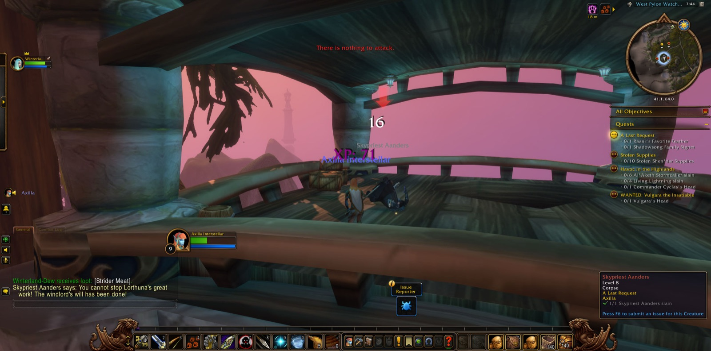
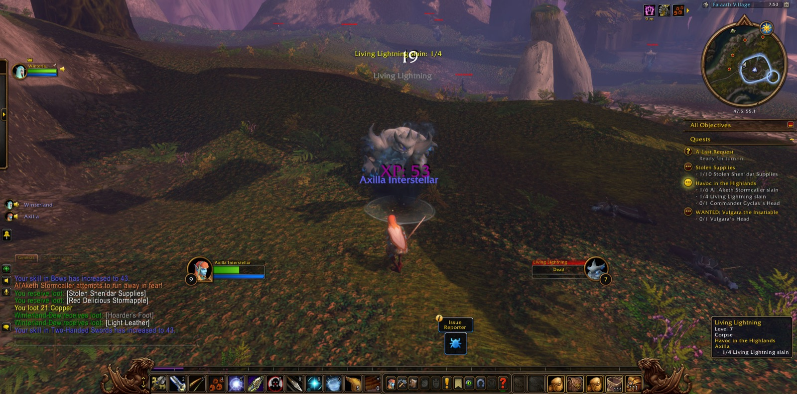
Back in Shen'dar Village three errands were closed together, and two more were laid upon her: to bear Aonda's Written Report to Valennia Stormfist, and the Signet to Talaanis Shadowsong, both in Valanaar. Zalia took her leave. For a short space Axilla joined with Lewbowski, another hunter, and together they brought down Vulgara the Insatiable, whose head was wanted. Then south she went through the Gustberry Lowlands and Windfield Orchard, and came at last into Valanaar, where the signet and the report were given into the hands they were meant for. New tasks were set before her there: Unnerving Silence, Bugged, The Grand Skyseer, Aid For The Refugees, and The Fate of a Loved One. She slew a Skyhopper, the first of its kind she had met. Five errands now waited upon her in Valanaar, and the road ran on beyond it.
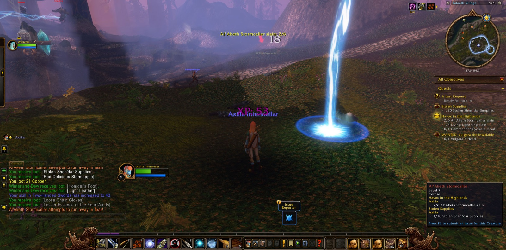
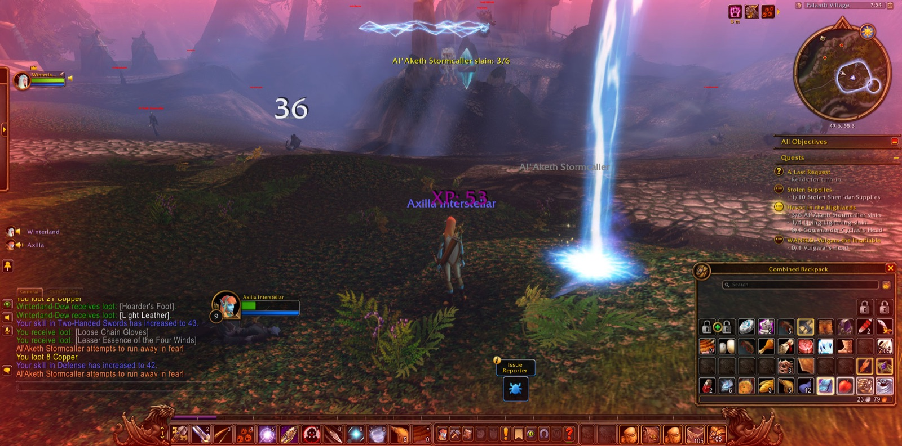
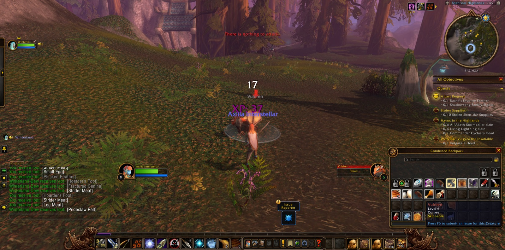
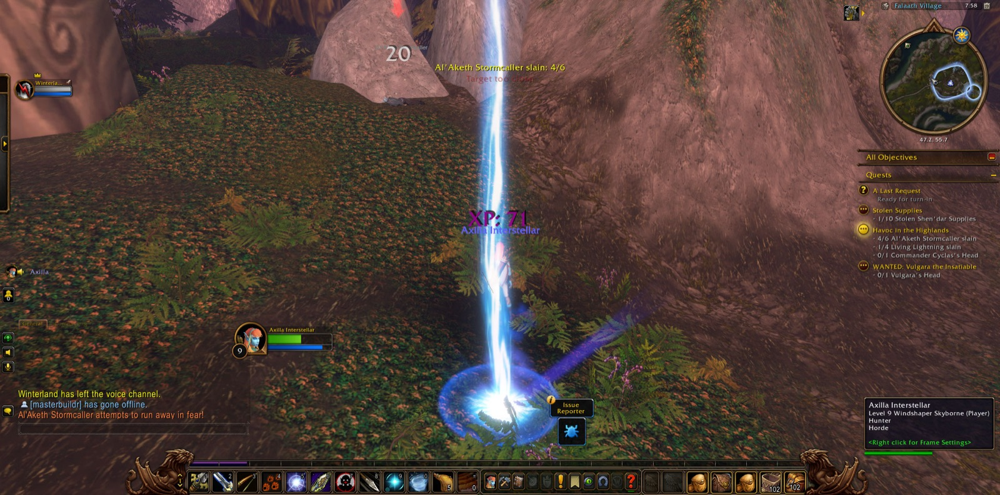
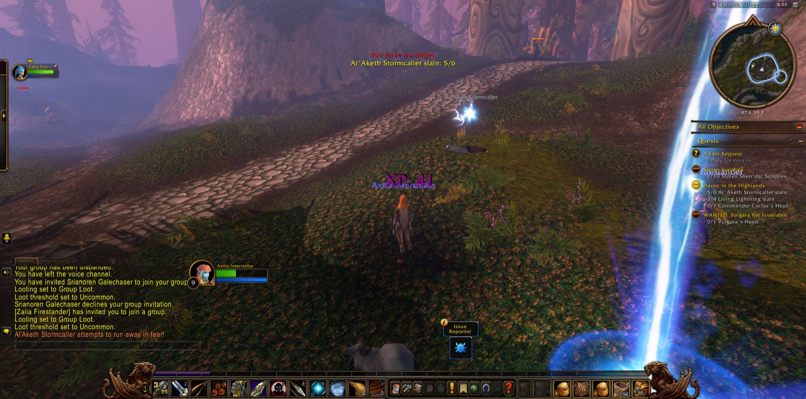
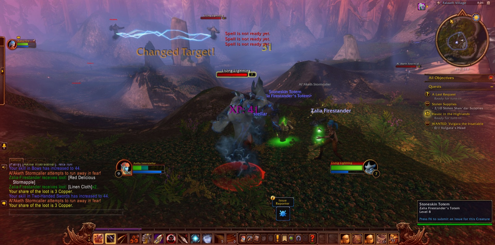
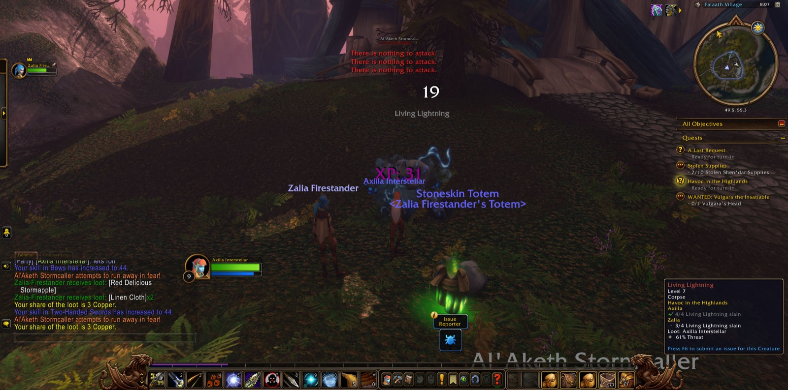
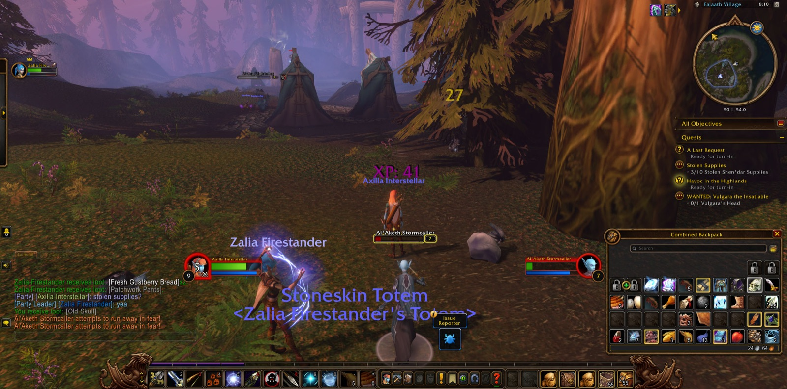